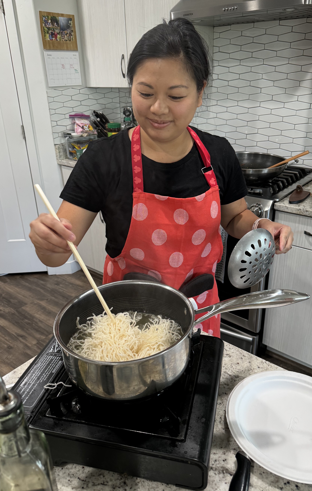

I was born in Hong Kong and raised in Toronto, where incredible Chinese food was always within reach, and my mother's home cooking left a lasting imprint on me. After moving to the U.S. for university, and later settling in Utah, I found myself constantly craving the familiar flavors of my childhood. With few authentic Chinese restaurants nearby, I learned to recreate the dishes I love from scratch, first for myself, then for my family. Now, through my cooking classes, I'm passionate about showing others that delicious, comforting Chinese food can absolutely be made at home, no matter where you live.